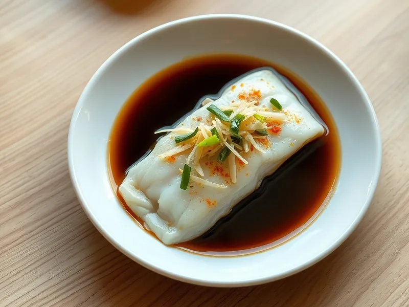

Треска на пару с имбирём и соевым соусом по-кантонски
Нежное филе трески на пару, политое горячим маслом с имбирём, зелёным луком и соевым соусом
20 мин2 порц.358 ккал на порциюБ 46 · Ж 17 · У 6Азиатская кухня
Открыть в приложении: порции, таймеры, список покупок
Продукты на 2 порц.
- Треска500 г
- Имбирь20 г
- Зелёный лук1 пучок
- Соевый соус2 ст. л.
- Сахар1 ч. л.
- Вода20 мл
- Растительное масло2 ст. л.
- Соль1 щеп.
- Кунжутное масло по желанию1 ч. л.
Как готовить
- Имбирь очистите и нарежьте тончайшей соломкой, зелёный лук тоже соломкой длиной 5 см. Филе трески обсушите и слегка посолите.
- Положите на тарелку половину имбиря, сверху рыбу. Поставьте тарелку в пароварку или на подставку в широкую кастрюлю с кипящей водой и накройте крышкой.
- Готовьте на пару на сильном огне 8-10 минут, пока рыба не станет белой и не будет легко расслаиваться вилкой. Слейте с тарелки выделившийся сок.
- Смешайте соевый соус с сахаром и водой и прогрейте 30 секунд. Выложите на рыбу оставшийся имбирь и зелёный лук.
- Раскалите растительное масло в ковшике до лёгкого дымка и сразу полейте им лук и имбирь, они зашипят. Полейте рыбу соусом и сбрызните кунжутным маслом.
Совет. Сок, который выделился при варке на пару, обязательно слейте: он мутный и даёт рыбный привкус соусу.